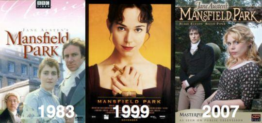

Hãy để cây bút khác nhấn lâu vào tội lỗi và đau khổ. Tôi bỏ những đề tài đáng ghét ấy ngay khi có thể, nóng lòng khôi phục lại mọi nhân vật, không cao thượng lắm trong khiếm khuyết của họ, an ủi tàm tạm và phải làm xong những việc còn lại.
Tôi hài lòng biết rằng trong chính thời gian này, Fanny của tôi ắt hẳn hạnh phúc bất chấp mọi sự. Cô ấy phải là người hạnh phúc, bất chấp mọi điều thông cảm hoặc cô nghĩ là thông cảm với tai họa của những người quanh cô. Cô có nhiều nguồn vui nên ắt phải tác động đến mọi người. Cô đã về Mansfield, cô là người hữu ích, cô được yêu thương, cô đã an toàn khỏi tay cậu Crawford và khi ngài Thomas trở về, cô có đủ chứng cứ để được ngài chấp thuận hoàn toàn và quý mến dù ngài đang trong tâm trạng buồn phiền. Cô còn vui vì Edmund không còn bị cô Crawford lừa bịp nữa.
Thực ra, Edmund còn lâu mới vui. Cậu khổ sở vì thất vọng và nuối tiếc, đau buồn vì sự việc đã chấm dứt và mong ước giá nó không bao giờ xảy ra. Cô biết thế và cũng buồn, nhưng là một nỗi buồn thỏa mãn, có chiều thoải mái và hài hòa với từng cảm giác chân tình nhất, rằng ít người có thể vui mừng trao đổi sự hoan hỉ lớn nhất của họ vì chuyện này.
Tội nghiệp ngài Thomas, là một người cha, ngài hiểu rõ những sai lầm của mình trong tư cách là một người cha, ngài buồn phiền lâu nhất. Ngài cảm thấy lẽ ra ngài không nên cho phép Maria kết hôn, ngài biết rõ tính uỷ mị của con gái, khiến ngài trở nên đáng trách vì đã cho phép, làm việc này ngài đã hy sinh sự đúng đắn để đổi lấy sự có lợi và bị chi phối vì những động cơ ích kỷ và sự khôn ngoan trần tục. Những suy nghĩ này đòi hỏi một thời gian mới dịu lại, nhưng thời gian gần như làm được tất cả, và tuy ít được an ủi về phía cô Rushworth vì nỗi đau do cô gây ra, ngài tìm thấy niềm an ủi ở những đứa con khác, lớn hơn ngài nghĩ. Cuộc hôn nhân của Julia hóa ra ít liều lĩnh hơn ngài nghĩ lúc đầu. Cô đã nhún nhường và xin được tha thứ, còn cậu Yates thèm muốn được nhận vào gia đình, sẵn sàng tôn kính ngài và tuân theo sự chỉ đạo của ngài. Cậu ta không đáng tin cậy lắm, nhưng vẫn có hy vọng trở nên đỡ tầm thường, ít ra bản chất cậu ta là người khá thích quanh quẩn ở nhà và biết kiềm chế, và dù sao còn được an ủi khi thấy cơ ngơi của cậu kha khá, lại không nợ nần như ngài e ngại, và hiện tại cậu được khuyên nhủ và đối đãi như một người bạn bõ công chăm chút. Tom dần dần hồi phục về sức khỏe, bớt hẳn tính lông bông và ích kỷ trong các thói quen trước kia của cậu cũng an ủi ngài rất nhiều. Cơn đau ốm đã khiến cậu tốt hơn mãi mãi. Cậu biết chịu đựng và học cách suy nghĩ, hai điều có lợi mà trước kia cậu chưa bao giờ có; Cậu ân hận vì sự kiện tồi tệ ở phố Wimpole, cậu cảm thấy mình là kẻ đồng lõa vì những sự thân tình nguy hiểm của cái nhà hát bất hợp lý, để lại trong đầu cậu một ấn tượng là ở tuổi hai mươi sáu, mà cậu vẫn chưa thấy có nhu cầu về ý thức, hoặc những người bạn tử tế là những thứ lâu bền trong ý nghĩa của hạnh phúc. Cậu trở thành người cần phải thế, hữu ích cho cha, bình tĩnh và hòa nhã, và không chỉ sống cho mình.
Thực sự là được an ủi! Chẳng mấy chốc ngài Thomas dựa vào sự tin cậy các nguồn tốt lành, Edmund góp phần vào sự thoải mái của cha, cải thiện tinh thần cho ngài ở một điểm duy nhất rằng trước kia cậu đã khiến ngài đau đớn. Các buổi tối hè, sau khi tản bộ và ngồi dưới bóng cây với Fanny, tâm trí cậu dịu lại và lại vui lên.
Những tình huống và hy vọng này dần dần làm ngài Thomas khuây khỏa, giảm nhẹ cảm giác mất mát và ngài tự điều hòa được phần nào, tuy nỗi khổ vì nhận thức đã sai lầm trong việc giáo dục các con gái không bao giờ tan hẳn.
Đã quá muộn cho ngài hiểu sự bất lợi với tính cách cho lớp trẻ, lẽ ra phải đối xử ngược lại hoàn toàn với những điều Maria và Julia trải qua ở nhà, bà dì Norris quá ư tâng bốc và chiều nịnh họ, liên tục đối lập với sự khe khắt của ngài. Ngài thấy mình đã đánh giá sai biết chừng nào khi mong làm mất tác dụng sai trái của bà Norris bằng cách khư khư giữ kín trong lòng, ngài thấy rõ là chỉ làm tăng thêm sự có hại, bằng cách dạy các con phải kiềm chế tâm trạng khi có mặt ngài, chỉ khiến ngài không hiểu được tính tình thực sự của họ và làm họ hiến toàn bộ niềm say mê cho một người có khả năng gắn bó với họ chỉ bằng sự yêu mến mù quáng và tán tụng quá mức của bà.
Đây là tình trạng quản lý tồi ghê gớm, nhưng nó đã xấu rồi, ngài dần dần cảm thấy sai lầm tệ hại nhất không phải là kế hoạch giáo dục của ngài. Trong đó phải thiếu một thứ, hoặc thời gian sẽ làm mờ tác dụng xấu của nó. Ngài e rằng thiếu phương châm xử thế thiết thực, rằng họ chưa bao giờ được dạy dỗ chính xác cách kiềm chế khuynh hướng và tính tình, ý thức về bổn phận mới có thể phát huy tác dụng. Họ chỉ được giới thiệu về lý thuyết trong niềm tin tôn giáo, nhưng chưa bao giờ đòi hỏi thực hành hàng ngày. Trở thành người nổi bật về sự tao nhã và tài năng là mục tiêu chủ yếu của tuổi thanh xuân có lẽ sẽ ảnh hưởng không lợi theo kiểu này, không có tác dụng về đạo đức cho tâm hồn. Ngài muốn các con gái trở thành người tốt, nhưng sự quan tâm của ngài chỉ nhằm vào sự am hiểu và cung cách, chứ không vào tính tình, vào sự cần thiết phải hy sinh và nhún nhường, ngài e rằng các cô chưa bao giờ nghe được lời nào bổ ích cho họ.
Ngài ân hận cay đắng vì sự thiếu hụt mà cho đến lúc này ngài mới có thể hiểu. Ngài khổ sở cảm nhận rằng ngài đã nuôi dạy các con gái bằng sự giáo dục tốn phí và gây ra nhiều lo âu mà họ thiếu hẳn sự hiểu biết về các bổn phận cơ bản, còn ngài không chịu làm quen với tính nết và tâm trạng của họ.
Nhất là tính tình vui vẻ và đam mê mãnh liệt của cô Rushworth, ngài chỉ hiểu khi họ đã có một kết quả đáng buồn. Cô không chịu rời bỏ cậu Crawford. Cô hy vọng kết hôn với cậu ta, và họ tiếp tục bên nhau cho đến khi cô buộc phải hiểu rằng hy vọng như thế là hão huyền, cho đến khi nảy sinh sự thất vọng và đau khổ vì nhận thức, làm cô thành xấu tính, tình cảm của cô với cậu giống như thù hận và một thời gian sau, khiến họ hành hạ lẫn nhau, rồi sau đó dẫn đến sự chia tay tự nguyện.
Cô đã sống với cậu, chuốc nỗi nhục là người phá hỏng mọi hạnh phúc của cậu ta với Fanny, và có rời bỏ cậu cũng không mang tiếng tốt hơn là cô đã chia lìa họ. Điều gì có thể vượt quá nỗi đau khổ của một trí tuệ như thế, trong một hoàn cảnh như thế?
Cậu Rushworth ly hôn không khó khăn gì, và chấm dứt cuộc hôn nhân trong tình huống như thế tạo nên mọi kết cục tốt hơn, có hiệu quả may mắn, không tính toán. Cô đã coi thường cậu ta và yêu người khác, cậu đã hiểu rõ điều đó. Bị làm nhục vì đần độn, thất vọng vì nỗi dam mê ích kỷ có thể khuấy động chút lòng thương hại. Sự trừng phạt của cậu tuân theo tư cách của cậu, là sự trừng phạt thâm trầm hơn tội lỗi của vợ. Cậu ta đã thoát khỏi sự cam kết đã trở thành nhục nhã và bất hạnh, cho đến khi nào một cô gái xinh xắn khác có thể cuốn cậu vào cuộc hôn nhân lần nữa, và hy vọng cậu có thể tiến lên nhanh hơn, nghi lễ huy hoàng hơn, và nếu có bị lừa bịp thì ít ra cũng bị bịp trong trạng thái tinh thần vui vẻ và may mắn. Trong khi cô ta phải rút lui với những cảm xúc mạnh hơn sự rút lui và sỉ nhục rất nhiều, không thể có mùa xuân thứ hai của hy vọng và con người.
Có thể để cô ở đâu đã trở thành chủ đề của những cuộc bàn thảo buồn rầu và quan trọng nhất. Sự gắn bó của bà Norris hình như tăng lên với lầm lỗi của cháu gái, muốn tiếp nhận cô ở nhà và được tất cả tán thành. Ngài Thomas không biết tin này, còn bà Norris càng giận Fanny nhiều hơn vì coi việc ở nhà của cô là có động cơ. Bà khăng khăng thay thế sự do dự của ngài vì lợi ích của bà, dẫu ngài Thomas trịnh trọng cam đoan với bà rằng không hề nói đến cô gái, không có thanh niên nào thuộc giới tính của ngài có thể bị xã hội gây nguy hiểm hoặc tính cách của cô Rushworth làm tổn thương, ngài sẽ không bao giờ phô phang nỗi nhục lớn như thế với xóm giềng để mong chú ý đến cô. Là một đứa con gái - ngài hy vọng một cô con gái hối lỗi - sẽ được ngài che chở, bảo đảm mọi tiện nghi và nâng đỡ bằng cách động viên hành xử đúng đắn, và được những người thân thừa nhận. Nhưng ngài không đồng ý hơn thế. Maria đã hủy hoại thanh danh của mình, và ngài sẽ không cố gắng hão huyền để phục hồi những thứ không bao giờ có thể phục hồi được, có thể ngài sẽ trừng phạt sự đồi bại hoặc tìm cách giảm bớt sự ô nhục của nó, ngài tự hiểu rằng dù thế nào cũng là kẻ đồng lõa đưa nỗi đau khổ như thế vào gia đình người khác.
Sự việc kết thúc rằng bà Norris rời Mansfield và tận tuy với cô cháu gái Maria bất hạnh, và hai dì cháu chuyển đến một vùng khác, hẻo lánh và kín đáo, rất ít giao du, một người không còn tình cảm yêu thương, người kia không chỉ trích, có thể tin rằng tâm tính của họ đã thành sự trừng phạt lẫn nhau.
Bà Norris chuyển khỏi Mansfield là thêm một niềm an ủi to lớn cho cuộc sống của ngài Thomas. Ngài đánh giá bà thấp đi rất nhiều kể từ ngày ngài từ Antigua trở về, trong các cuộc giao dịch cùng ở thời kỳ đó, trong các cuộc trao đổi hàng ngày, trong công việc hoặc chuyện phiếm, bà thường bị mất vị trí trong sự quý trọng của ngài, và ngài tin rằng thời gian sẽ làm cái việc chơi khăm bà, hoặc ngài đã đánh giá quá cao sự khôn ngoan của bà và trước kia đã khoan dung quá nhiều với thái độ của bà. Ngài cảm thấy bà là nỗi khó chịu triền miên, càng ngày càng tệ hơn và hình như không có dịp nào ngừng. Dường như bà là một bộ phận của ngài và ngài phải chịu đựng vĩnh viễn. Vì thế thoát được bà thật nhẹ cả người, và thật là hạnh phúc lớn khi bà không để lại đằng sau những hồi ức cay đắng, có thể thành cơ nguy để ngài chứng minh rằng cái xấu có khi lại sản sinh ra điều hay.
Chẳng người nào ở Mansfield nuối tiếc bà. Bà chẳng bao giờ có khả năng gắn bó ngay cả với những người bà yêu quý nhất, và vì cuộc bỏ nhà theo trai của cô Rushworth, tính tình của bà luôn trong trạng thái cáu kỉnh, tức tối, khiến bà gây sự, dằn vặt khắp nơi. Ngay một người như Fanny cũng không hề rơi nước mắt vì bà bác Norris, kể cả khi bà ra đi mãi mãi.
Trong chừng mực nào đó, việc Julia bỏ trốn còn khá hơn Maria vì có sự khác biệt trong sắp đặt và hoàn cảnh, nhưng điều lớn hơn với cô là cô ít được bà dì yêu quý hơn, ít tâng bốc hơn và ít nuông chiều hơn. Nhan sắc và tài năng của cô bao giờ cũng bị xếp ở vị trí thứ hai. Cô đã quen nghĩ mình thua kém Maria. Lẽ tất nhiên, trong hai chị em, tính tình cô dễ chịu hơn, xúc cảm của cô dù có nhanh nhạy vẫn còn dễ kiểm soát hơn, và nền giáo dục không có hại cho cô đến mức tự cao tự đại.
Julia đã trình bày phần lớn nỗi thất vọng vì cậu Henry Crawford. Sau khi nỗi chua xót đầu tiên vì bị coi thường chấm dứt, cô đã khá nhanh chóng chọn con đường đúng là không nghĩ tới cậu ta nữa, rồi khi ở London, sự quen biết được nối lại, ngôi nhà của cậu Rushworth trở thành mục tiêu của cậu Crawford, Julia đã có hành động đáng khen là tự rút lui khỏi đó, chọn thời gian này để đi thăm những bạn bè khác của cô, nhằm bảo đảm cho mình khỏi bị lôi cuốn. Đây chính là động cơ của cô đến nhà các anh chị họ. Cậu Yates không làm gì hết vì việc này. Có lúc cô cho phép cậu ta chăm sóc, nhưng rất ít nghĩ đến việc chấp nhận cậu ta, và nếu không có chuyện hạnh kiểm của chị cô vỡ tan tành, khiến nỗi sợ cha và gia đình của cô càng tăng - cứ hình dung hậu quả của nó sẽ càng khắt khe và kiềm chế dữ dội hơn với mình - khiến cô vội vã quyết định tránh ngay lập tức những nỗi kinh hoàng, chắc chắn cậu Yates sẽ không bao giờ thành công. Cô không bỏ trốn với những tình cảm tệ hại hơn sự lo sợ ích kỷ đó. Với cô, dường như đấy là việc duy nhất cô có thể làm. Tội lỗi của Maria đã xui khiến hành động dại dột của Julia.
Henry Crawford bị hư hỏng vì độc lập sớm và tấm gương xấu trong gia đình, thỏa thích thú phù hoa máu lạnh hơi quá lâu. Có lần, một cơ hội bất ngờ và không xứng đáng đã đưa đẩy cậu vào con đường hạnh phúc. Có lẽ cậu thỏa mãn vì chinh phục được tình cảm của một người phụ nữ đáng yêu, có lẽ cậu đủ đắc chí khi xua tan sự miễn cưỡng và lọt được vào tình cảm quý mến và nhân hậu của Fanny Price, rất có thể đem lại thành công và hạnh phúc cho cậu. Tình cảm của cậu sẵn sàng được việc. Ảnh hưởng của cô đến cậu đã tạo cho cậu có ảnh hưởng nào đó với cô. Nếu cậu xứng đáng hơn, nhất định cậu sẽ giành được nhiều hơn; Nhất là khi đám cưới đã diễn ra, cậu được lương tâm cô trợ giúp, làm dịu xu hướng từ chối ban đầu của cô và đưa họ thường xuyên gặp nhau. Nếu cậu kiên trì và chính trực, Fanny ắt phải là phần thưởng cho cậu - một phần thưởng được tự nguyện ban tặng - trong vòng một thời gian vừa phải sau đám cưới của Edmund và Mary.
Cậu đã làm như dự định, và cậu biết là nên thế, sau khi từ Portsmouth về, sẽ xuống Everingham, và cậu có thể quyết định số phận hạnh phúc của mình. Nhưng cậu bị ép lưu lại bữa tiệc của bà Fraser; Cậu ở lại để thỏa mãn tính hư danh và đã gặp cô Rushworth ở đấy. Tò mò và phù phiếm vốn ràng buộc với nhau, và sự khoái lạc trước mắt cám dỗ quá mạnh với một đầu óc không quen hy sinh cho lẽ phải, cậu quyết định hoãn chuyến đi Norfolk, quyết định viết thư trả lời hoặc mục tiêu đó không còn quan trọng nữa, và ở lại. Cậu gặp cô Rushworth và nhận sự lạnh lùng, xa cách của cô, lẽ ra phải hình thành sự thờ ơ hiển nhiên, vĩnh viễn giữa họ. Nhưng bị mất thể diện, cậu không thể chịu bị gạt bỏ vì người phụ nữ luôn có nụ cười chiều theo ý cậu, cậu phải cố gắng giảm bớt sự kiêu hãnh phô bày lòng phẫn nộ với Fanny, cậu phải khá hơn và làm cô Rushworth Maria Bertram lại ở trong vòng tay cậu.
Cậu bắt đầu cuộc tấn công với tâm trạng đó. Bằng sự kiên trì sôi nổi, chẳng mấy chốc cậu đã tái lập phần nào sự giao du, nịnh đầm và ve vãn tán tỉnh quen thuộc, những thứ giới hạn tầm nhìn của cậu; Nhưng đắc thắng đã bỏ qua sự thận trọng có thể cứu vãn cả hai, và tuy khởi đầu vì giận dữ, cậu đã đặt mình vào quyền lực tình cảm của cô, mạnh hơn là cậu tưởng. Cô yêu cậu, không rút khỏi sự săn sóc, công khai thừa nhận cậu là người yêu của cô. Cậu lúng túng vì tính phù phiếm của mình, có thể là cái cớ nho nhỏ của tình yêu, và trong suy nghĩ, không có tí tẹo bất trung nào với em họ của cô. Giữ cho Fanny và các tiểu thư Bertram khỏi biết về chuyện đang diễn ra là mục tiêu quan trọng của cậu. Sự giữ bí mật không thể khêu gợi lòng tin của cô Rushworth hơn cậu cảm thấy cho mình. Khi cậu từ Richmond trở về, cậu sẽ mừng vì không gặp cô Rushworth nữa. Mọi chuyện tiếp theo là kết quả sự khinh suất của cô, rốt cuộc cậu bỏ đi cùng cô vì không thể làm khác được, lúc đó cậu vẫn tiếc Fanny, và còn tiếc nhiều hơn nữa khi mọi sự om sòm vì cuộc tằng tịu này kết thúc; Bằng ảnh hưởng trái ngược, chỉ trong vài tháng đã dạy cho cậu đặt tính nết dịu dàng, tâm hồn thuần khiết và sự ưu tú trong phương châm xử thế của Fanny lên bậc cao hơn hẳn.
Sự trừng phạt đó, sự trừng phạt công khai vì hành động nhục nhã chỉ ở đúng phạm vi phạm tội của cậu ta, vì chúng ta đều biết xã hội không hề có một rào cản nào cho đức hạnh. Trên cõi đời này, hình phạt quá nhẹ so với mong muốn, nhưng không có sự tự tin để chờ đón một sự sắp xếp chính xác hơn trong tương lai, chúng ta phải xem xét công bằng một người lọc lõi như Henry Crawford thường gây cho bản thân những phiền toái và ân hận không nhỏ - phiền toái vì thỉnh thoảng lại tự trách mình, và ân hận vì tình trạng thảm hại - khi đền đáp lòng hiếu khách như thế, xúc phạm sự yên ổn của gia đình như thế, bị mất người quen biết tử tế nhất, đáng quý trọng và yêu mến nhất, đồng thời mất cả người phụ nữ cậu đã yêu, vừa say đắm vừa đầy lý trí.
Sau những việc đã qua làm tổn thương và xa lánh cả hai gia đình, nhà Bertram và nhà Grant ở gần nhau sẽ khó chịu bậc nhất, nhưng nhà Grant vắng mặt vài tháng đã cố ý kéo dài, may mắn thay đã kết thúc đúng lúc cần thiết, hoặc ít ra cũng thực hiện được một chuyến di dời vĩnh viễn. Tiến sĩ Grant thông qua một quan hệ mà ông ta gần như hết hy vọng, đã giành được chức vị giáo sĩ tại Westminster, tạo cơ hội để rời Mansfield, một cái cớ để ở London và tăng thu nhập, đáp ứng cho phí tổn của sự thay đổi, được cả người đi lẫn người ở lại hoan nghênh nhiệt liệt.
Bà Grant vốn có xu hướng dễ yêu và được yêu, ắt hẳn ra đi với niềm nuối tiếc cả cảnh và người bà đã quen, nhưng cũng vui vì sự sắp xếp bảo đảm được hưởng nhiều thứ, bà lại có nhà để mời Mary. Còn Mary đã chơi bời đủ với bè bạn, đủ phù phiếm, tham vọng, yêu đương, và thất vọng trong nửa năm gần đây, đang cần sự ân cần thực sự của tấm lòng bà chị và sự yên tĩnh vừa phải cho cá tính của cô. Họ sống cùng nhau, khi tiến sĩ Grant bị chứng ngập máu và qua đời, trong một tuần có ba bữa tiệc lớn của các tổ chức từ thiện, họ vẫn ở với nhau, vì Mary tuy đã quyết định không gắn bó với anh trai lần nữa, vẫn nóng lòng tìm kiếm giữa đám người tiêu biểu chưng diện hoặc các chàng hoàng thái tử nhàn rỗi, những người sẵn sàng mê mẩn nhan sắc của cô, và với hai chục ngàn bảng của cô, bất cứ người nào cũng có thể thỏa mãn thị hiếu sành sỏi hơn mà cô thu nhận được hồi ở Mansfield, cô đã học ở đó cách đánh giá tính nết và cung cách của ai đó có thể cho phép hy vọng về một hạnh phúc gia đình, hoặc đủ gạt Edmund Bertram ra khỏi đầu cô.
Về mặt này, Edmund rất có lợi thế với cô. Cậu không đợi và mong muốn dành những tình cảm còn trống trải cho một người xứng đáng tiếp theo cô. Cậu không tiếc Mary Crawford, và quan sát Fanny cậu sửng sốt thấy không hiểu vì sao cậu đã từng vừa lòng một người phụ nữ thuộc loại khác hẳn, còn Fanny không phát triển những nụ cười, điệu bộ cho thân thiết, có ý nghĩa với cậu như Mary Crawford từng làm; Liệu có thể hy vọng thuyết phục cô rằng sự quý trọng nồng nhiệt và như em gái của cô dành cho cậu sẽ là nền tảng đủ cho một tình yêu gắn bó.
Tôi cố ý tránh tả những cuộc hẹn hò trong thời gian này, để bạn đọc có thể tha hồ tưởng tượng và hiểu rằng phương thuốc chữa cho những say đắm không thể chế ngự được đã chuyển hóa thành sự gắn bó vững chắc, biến đổi nhiều theo thời gian trong những con người khác nhau. Tôi chỉ khẩn khoản nài xin mọi người tin rằng đúng vào thời gian hoàn toàn tự nhiên như nên thế, và không đầy một tuần trước, Edmund đã thôi quan tâm đến cô Crawford và muốn cưới Fanny đúng như Fanny mong mỏi.
Thực ra, cậu đã quý trọng Fanny từ lâu, sự quý trọng dựa trên những khẳng định khả ái nhất về sự trong trắng, bơ vơ và được hoàn thiện vì mọi vẻ hấp dẫn ngày càng phát triển xứng đáng, vậy còn gì tự nhiên hơn sự thay đổi này? Yêu thương, dìu dắt và che chở cô như cậu đã làm từ năm cô mới lên mười, trí tuệ của cô nay đã mở mang đến mức giỏi giang nhờ sự chăm sóc của cậu, sự an ủi của cô tùy thuộc vào lòng tốt của cậu, với cậu, cô là người gần gũi và đặc biệt thú vị, thân thiết hơn bất cứ người nào ở Mansfield, và giờ đây cậu đã biết ưa thích cặp mắt trong sáng, dịu dàng hơn cặp mắt đen lấp lánh. Luôn ở bên cô, luôn trò chuyện tâm tình với cô, tình cảm của cậu luôn trong tình trạng có lợi so với sự chán ngán gần đây, những cái nhìn trong trẻo, dịu dàng từ rất lâu không giành được sự nổi tiếng trước.
Biết chỉ một lần lên đường và cảm động vì những điều cậu đã làm, trên con đường tới hạnh phúc sẽ không có gì thiếu thận trọng ngăn cản hoặc làm chậm tiến trình của cậu, không có gì nghi ngờ về sự xứng đáng của cô, không sợ đối lập sở thích, không cần phải đưa ra những hy vọng mới về hạnh phúc do bất đồng tính tình. Tâm trí, tính nết, các quan niệm và thói quen của cô không hề che giấu nửa vời, không tự dối mình về hiện tại, không nhờ cậy vào sự lợi dụng trong tương lai. Ngay trong chuyện say đắm cuồng dại gần đây của cậu, cậu vẫn phải thừa nhận sự ưu việt về tinh thần của Fanny. Bởi vậy, tình cảm lúc này của cậu phải là gì đây? Lẽ tất nhiên, cô là người quá tốt duy nhất cho cậu, nhưng vì chẳng ai muốn có thứ quá tốt cho mình, cậu vẫn thiết tha trong việc theo đuổi hạnh phúc và trong một thời gian dài không được cô khuyến khích, vốn là người rụt rè, hay lo âu, nghi ngại, nhiều lần cô vẫn không thể âu yếm như nên có, đưa ra hy vọng thành công mạnh mẽ nhất, tuy nó duy trì một giai đoạn lâu hơn, cho cậu hiểu toàn bộ sự thật thú vị và lạ lùng. Cậu nhận thức được hạnh phúc là được một trái tim như thế yêu quý từ lâu, phải cao thượng đủ cho phép bất kỳ sức mạnh của ngôn ngữ, trong đó cậu có thể che chở cho cô hoặc cho bản thân, nó phải là một hạnh phúc thú vị! Nhưng có hạnh phúc ở một nơi nào khác, không tả xiết nhưng có thể với tới. Xin đừng để bất cứ người nào mạo muội tặng tình cảm của một cô gái khi nhận sự bảo đảm của tình yêu mà chắc chắn cô không tự cho phép ấp ủ hy vọng.
Các khuynh hướng của họ được tìm hiểu kỹ càng, không có khó khăn nào ở đằng sau, không có trở ngại nào vì nghèo túng hoặc về phía cha mẹ. Đây là cuộc hôn nhân mà ngài Thomas cầu mong, thậm chí còn đón trước. Chán ngấy những quan hệ tham vọng và vụ lợi, ngài càng đánh giá cao hơn chân giá trị của nguyên tắc xử thế và tính nết, sự băn khoăn trước hết là ràng buộc bởi những bảo đảm mạnh nhất, duy trì mọi thứ đúng lúc, đúng chỗ trong nhà cho ngài, ngài rất mãn nguyện cân nhắc đến khả năng hai trẻ tìm thấy sự an ủi lẫn nhau vì mọi sự đáng buồn đã xảy ra cho từng người, và vui vẻ ưng thuận lời thỉnh cầu của Edmund, ngài phấn chấn vì Fanny đã hứa tìm cho ngài một cô con gái, trái ngược hẳn với ý kiến ban đầu của ngài về cô bé nghèo khổ tới nhà, lúc đầu rất bối rối, lại đúng vào lúc đang nảy sinh những kế hoạch và quyết định trọng đại, theo chỉ thị của họ và được hàng xóm của họ hoan nghênh.
Fanny là người con gái thực sự mà ngài mong muốn. Sự ân cần độ lượng của ngài đã đem lại niềm an ủi lớn nhất cho chính ngài. Sự không câu nệ của ngài đã được đền đáp hậu hĩ, sự hào hiệp trong các ý định của ngài dành cho cô rất xứng đáng. Ngài có thể làm cho tuổi thơ của cô vui sướng hơn, nhưng đó là một sự đánh giá không đúng với thực tế, bề ngoài có vẻ khắc nghiệt của ngài đã tước đi tình yêu ban đầu của Fanny, còn bây giờ đã hiểu nhau tường tận, họ gắn bó với nhau bền vững. Sau khi bố trí cho cô ở Thomton Lacey, chăm chút mọi thứ tiện nghi cho cô xong, mục tiêu gần như hàng ngày của ngài là gặp cô ở đó, hoặc bảo cô rời khỏi đó.
Bấy lâu nay, phu nhân Bertram yêu quý cô một cách ích kỷ, bà không thể vui lòng chia tay với cô. Không hạnh phúc của con trai hoặc cháu gái có thể khiến bà mong ước cuộc hôn nhân này. Nhưng rồi bà có thể chia tay với cô, vì Susan đã thế chỗ cho chị. Susan thành đứa cháu gái không có ý di chuyển, khiến bà mới hài lòng làm sao! Susan thích ứng nhanh vì đầu óc lanh lợi và luôn muốn là người có ích, còn Fanny tính tình dịu dàng và có tình cảm biết ơn sâu sắc. Susan không bao giờ có thời gian rảnh rỗi. Điều an ủi Fanny trước hết Susan là người bổ trợ, sau nữa là người thay thế cô, nó được định cư ở Mansfield và mọi sự có vẻ lâu dài. Tính tình bạo dạn và trạng thái thần kinh vui vẻ hơn của Susan khiến mọi sự với cô trở nên dễ dàng. Cô nhanh chóng hiểu tính khí của những người cô phải giao tiếp, và không bị tính rụt rè bẩm sinh kìm hãm những nguyện vọng hợp lý, cô sớm được hoan nghênh và là người hữu ích cho tất cả. Sau khi Fanny chuyển đi, cô kế tục một cách tự nhiên tác dụng an ủi bà bác triền miên của chị cô, và có khi dần dần được bà yêu quý nhất trong hai chị em. Sự hữu ích của cô, sự ưu tú của Fanny, hạnh kiểm luôn luôn tốt và tiếng tăm đang lên của William, những điều tốt đẹp và thành công của các thành viên khác trong gia đình, tất cả giúp cho việc người nọ thúc đẩy người kia tiến lên, khiến ngài tin tưởng, khuyến khích và giúp đỡ, ngài Thomas nhìn thấy lý do liên tiếp để mãi mãi tự hào vì những việc ngài đã làm cho tất cả bọn họ, công nhận lợi thế của những thử thách gian khổ từ sớm và tính kỷ luật, ý thức của người sinh ra để nỗ lực và chịu đựng.
Với những phẩm chất đích thực và tình yêu đích thực, lại không thiếu của cải và tình bạn, niềm vui của cặp anh em họ đã nên vợ nên chồng chắc hẳn bảo đảm cho hạnh phúc nơi trần thế. Cũng như tổ chức một cuộc sống gia đình, gắn bó với những niềm vui nơi thôn dã, ngôi nhà của họ là một tổ ấm yêu thương và an ủi; và để hoàn tất hình ảnh tốt lành trong cuộc sống của Mansfield bằng cái chết của tiến sĩ Grant, xảy ra sau khi họ cưới nhau đủ lâu, để bắt đầu muốn tăng thu nhập và cảm thấy ở xa cha mẹ là bất tiện.
Vào cái ngày họ dọn về nhà cha xứ ở Mansfield, nơi đã qua hai đời chủ cũ, Fanny chưa bao giờ đến gần mà không có cảm giác đau đớn vì kiềm chế hoặc hoảng hốt, chẳng mấy chốc nó đã trở nên thân thiết với trái tim cô, nó vô cùng hoàn hảo trong mắt cô, cũng như mọi thứ khác trong phạm vi và quyền ban chức của giáo sĩ ở trang viên Mansfield đã có từ lâu.
HẾT
